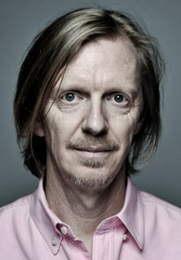
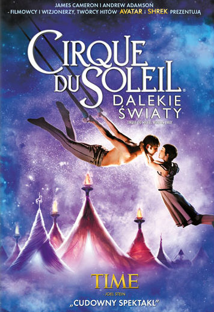
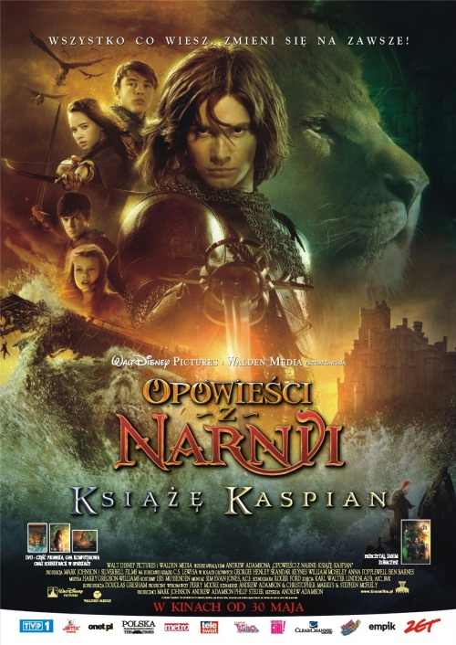
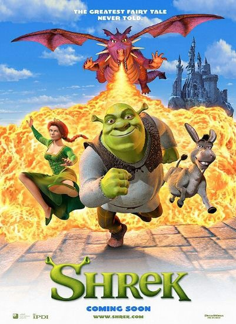

 Andrew Adamson filmem "Shrek" zadebiutował jako reżyser. Pracę w PDI - teraz PDI/DreamWorks - rozpoczął w 1991 roku. Ma już spore doświadczenie w dziedzinie efektów wizualnych. W jego dorobku jako specjalisty ds. efektów specjalnych w firmie PDI/DreamWorks znajdują się następujące filmy "Angels in the Outfield" i "Double Dragon". Pracował także podczas realizacji "Prawdziwych kłamstw" (True Lies), "Heart and Souls" i "Toys". Adamson był członkiem ekipy działu PDI/DreamWorks zajmującego się realizacją wielokrotnie nagradzanych spotów reklamowych - Converse "Planet Kevin", Dow "Scrubbing Bubbles Greatest Show" i Miller Genuine Draft "Juke Box".
| Filmografia | ||
|---|---|---|
| 2017 | ||
| Fantasy / Przygodowy | Fountain City | |
| 2012 | |
Dramat / Wojenny |
| Pan Pip | ||
| (Mr. Pip) |  | Fantasy |
| Cirque du Soleil: Dalekie światy | ||
| (Cirque du Soleil: Worlds Away) | ||
| 2008 |  | Familijny / Fantasy / Przygodowy |
| Opowieści z Narnii: Książę Kaspian | ||
| (The Chronicles of Narnia: Prince Caspian) | ||
| 2005 | |
Familijny / Fantasy / Przygodowy |
| Opowieści z Narnii: Lew, czarownica i stara szafa | ||
| (The Chronicles of Narnia: The Lion, the Witch and the Wardrobe) | ||
| 2004 | |
|
| Animacja / Familijny / Komedia | Shrek 2 | |
| 2001 |  | |
| Animacja / Familijny / Komedia | Shrek |